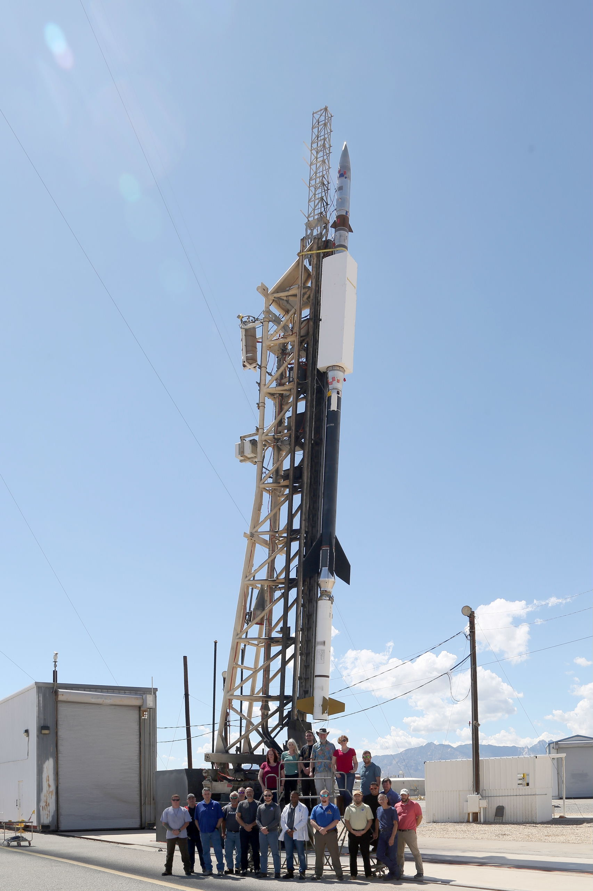
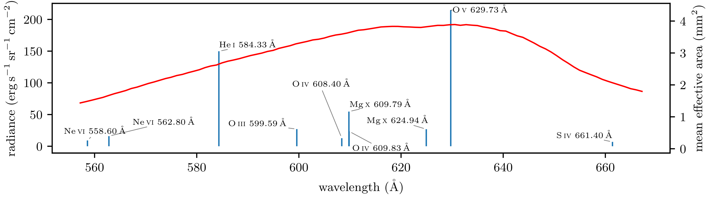
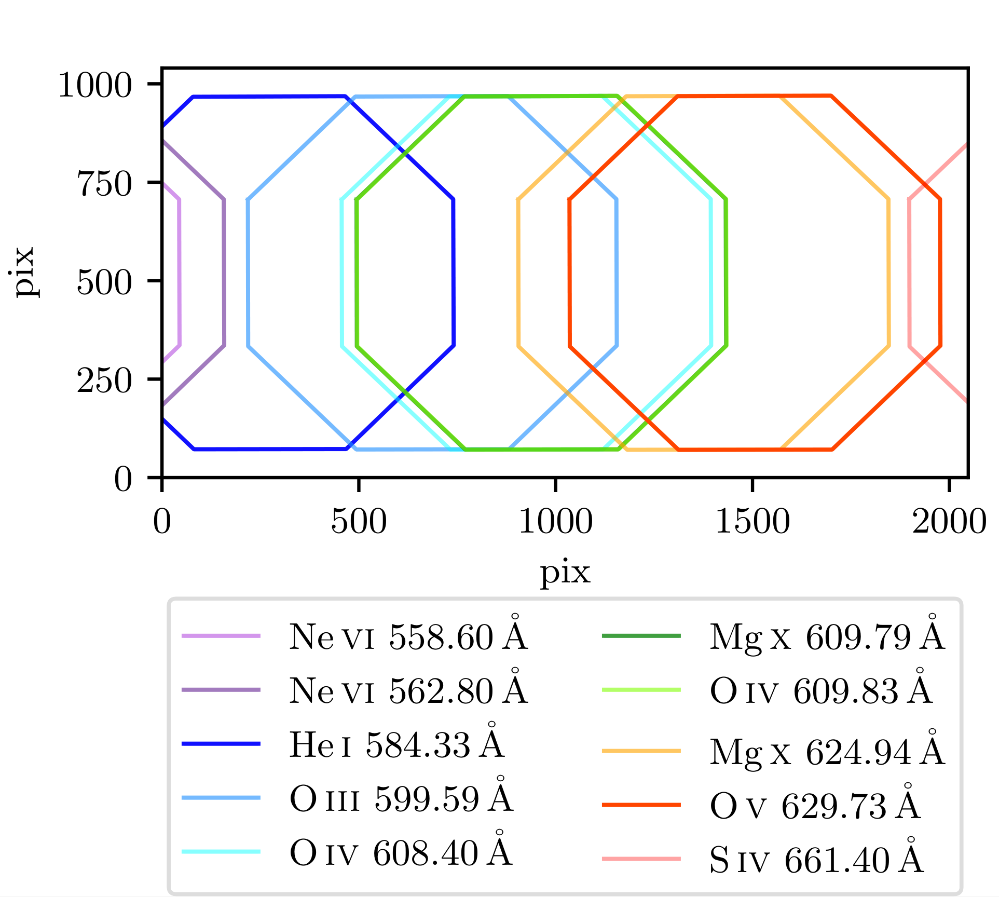
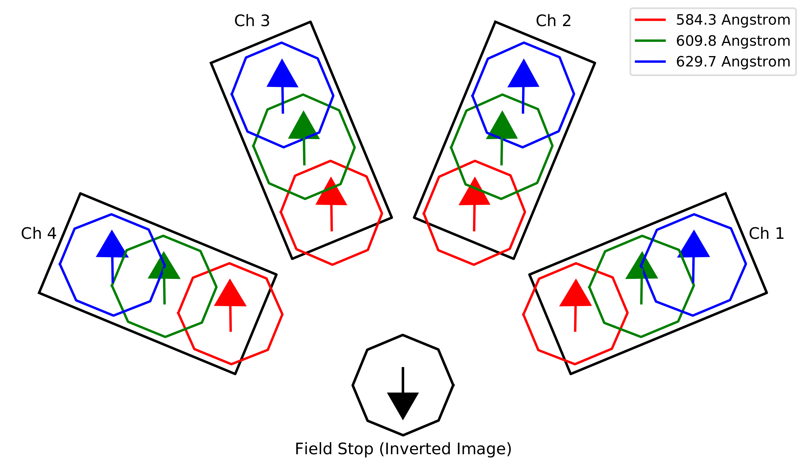
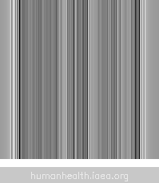
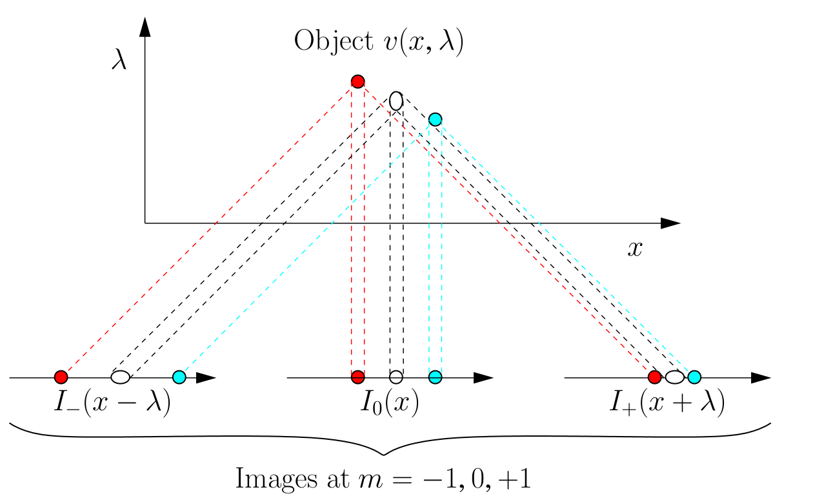
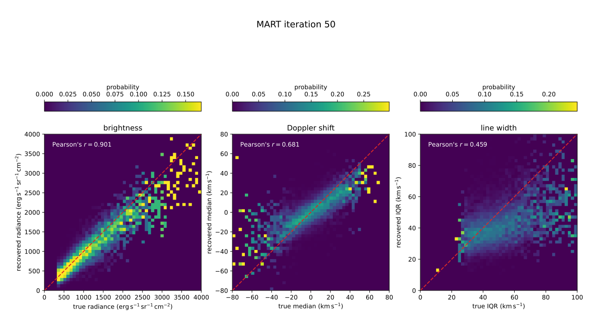
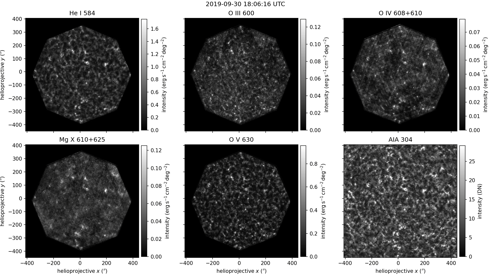
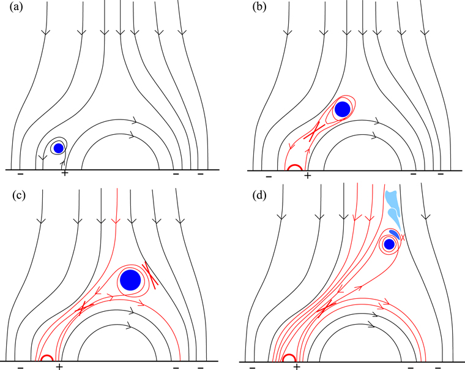

Roy T. Smart,
Charles C. Kankelborg,
and Jacob D. Parker
Montana State University
The Physical Structure and Evolution of Transition Region Explosive Events Observed with ESIS

Interface Region Imaging Spectograph (IRIS) Si IV 1394 A






ESIS Inversions
Computed tomography (CT)
Spatial/spectral ambiguity
Limited number of angles
Multiplicative algebraic reconstruction technique (MART)




O V 630 A
Event E

Sterling et al. (2016)
Conclusions and Future Work
MART can be used to invert multiple lines within the ESIS passband
Fastest Doppler shift in Event E is about 60 km/s
Event E is a dynamic structure reminiscent of a minifilament eruption or jet.
We will continue to improve inversions (regularization, machine learning, etc.)
Statistical study of all the events in the passband